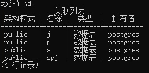
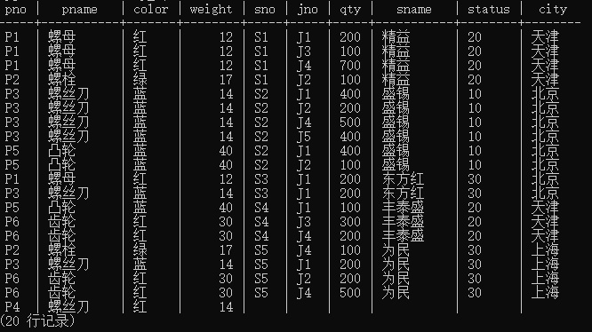
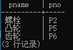
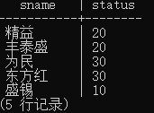
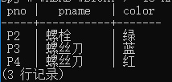
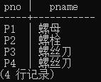
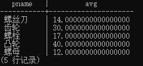
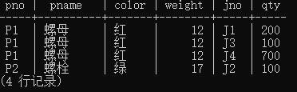

SQL复杂查询与视图
数据说明
现在有一个spj数据库，其中有四个表，分别为：
S |
P |
J |
SPJ |
|---|---|---|---|
| 供应商代码表 | 零件表 | 工程项目表 | 供应情况表 |

SQL查询
创建视图
将零件表P表与供应情况SPJ表、供应商S表结合，得到零件与供应商的关系：
CREATE VIEW P_S
AS SELECT P.PNO,PNAME,COLOR,WEIGHT,S.SNO,JNO,QTY,SNAME,STATUS,CITY
FROM P LEFT JOIN SPJ
ON P.PNO = SPJ.PNO
LEFT JOIN S
ON SPJ.SNO = S.SNO;
可以得到：

操作
在零件表的视图中找出weight < 20 的零件名字(PNAME)
SELECT DISTINCT PNAME FROM P_S WHERE WEIGHT < 20;查询供应商表中城市为北京的供应商姓名(SNAME)
SELECT DISTINCT SNAME FROM S WHERE CITY = '北京';在零件表中查询平均重量在15以上的零件名字和零件代码（PNO）
SELECT DISTINCT PNAME,PNO FROM P_S WHERE PNAME IN ( SELECT DISTINCT PNAME FROM P_S GROUP BY PNAME HAVING AVG(WEIGHT) > 15);
查询全体供应商的姓名（SNAME）和状态(STATUS)
SELECT DISTINCT SNAME,STATUS FROM P_S;
查询所有weight在13到20岁（含13和20）的零件代码（PNO）、零件名（PNAME）和颜色(COLOR)
SELECT DISTINCT PNO,PNAME,COLOR FROM P_S WHERE WEIGHT >= 13 AND WEIGHT <=20;
查询所有“螺”开头的的零件代码（PNO）和零件名（PNAME）
SELECT DISTINCT PNO,PNAME FROM P_S WHERE PNAME like '螺%'
查询所有零件的平均重量
SELECT DISTINCT PNAME,AVG(WEIGHT) FROM P_S GROUP BY PNAME;
查询同在“天津”的工程项目名（JNAME）
SELECT JNAME FROM J WHERE CITY = '天津';查询在“精益”供应商下的零件，且质量小于15的零件详细信息
SELECT PNO,PNAME,COLOR,WEIGHT,JNO,QTY FROM P_S WHERE SNAME = '精益';